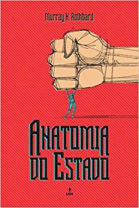

1 – A Lei – Frederick Bastiat – 64 páginas.
Bastiat não é um libertário ou um anarcocapitalista, mas os seus pontos de vista chegam muito próximo e até contribuíram em alguns temas libertários. Além disso, o seu livro mostra a clara influência da tradição liberal lockeana, que mais tarde atingiu a sua forma mais consistente no libertarianismo. O ponto mais forte do Bastiat, mesmo como um liberal, é a sua atitude sempre contrária ao estado, de forma que ele se distingue e muito de outras correntes liberais que assumem uma linha de frente ativa na defesa do estatismo. Bastiat, pelo contrário, foca os seus esforços em demonstrar as falhas do estatismo de forma muito didática e clara.
2- Anatomia do Estado – Murray N.Rothbard – 80 páginas.
Neste pequeno livreto, Rothbard foca os seus esforços em explicar de forma didática como o estado foi criado, como ele se mantém e como ele pode ser destruído. A abordagem é bem didática e clara, o que faz com que o livro seja um dos preferidos por libertários em suas indicações a não libertários.
3 – estado? Não, Obrigado! – Marcello Mazzilli – 157 páginas

Trago agora um livro que injustamente não é muito famoso em listas de livros para libertários. O livro é muito bom e poderia inclusive ser o primeiro livro libertário a ser lido por ser tão didático. O próprio subtítulo dele já diz muito: “O manual Libertário, ou o ABC do antiestatismo” e foi escrito por um dos fundadores do movimento libertário italiano.